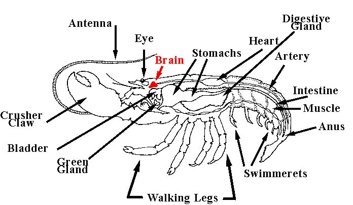

Monday, February the 26th, 2007
back to: title, date or indexes
Untold numbers of Hooting Yard readers have been writing in with a single demand. What we expect, Mr Key, they all say, is regular lobster diagrams! We know what we want and we want them weekly! Whether this is a true reflection of the popular will or a sinister campaign to divert us from our important work I cannot say. As a sop to the protesters, however, here is a lobster diagram. You will note that it emphasises the location of the lobster's brain, which is, incidentally, the subject of Pebblehead's latest bestselling paperback, The Location Of The Lobster's Brain.
